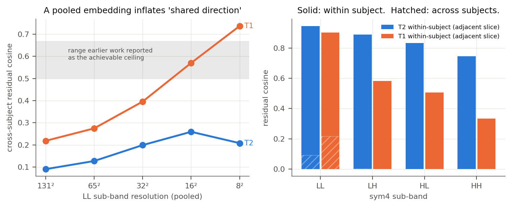
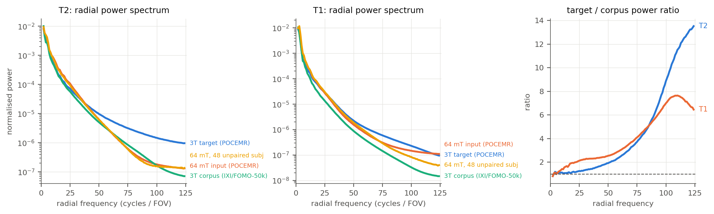
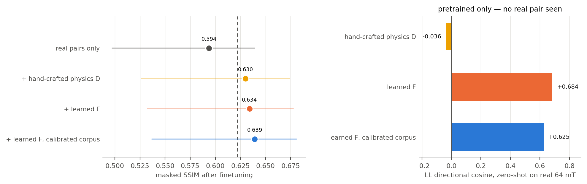
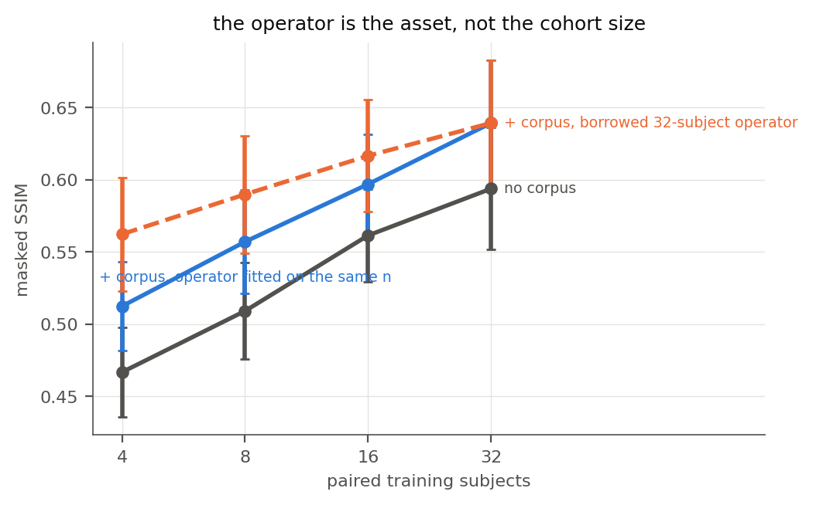
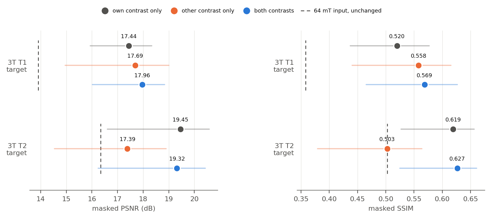
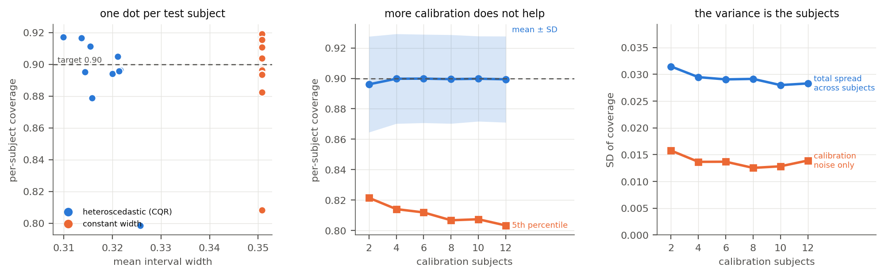
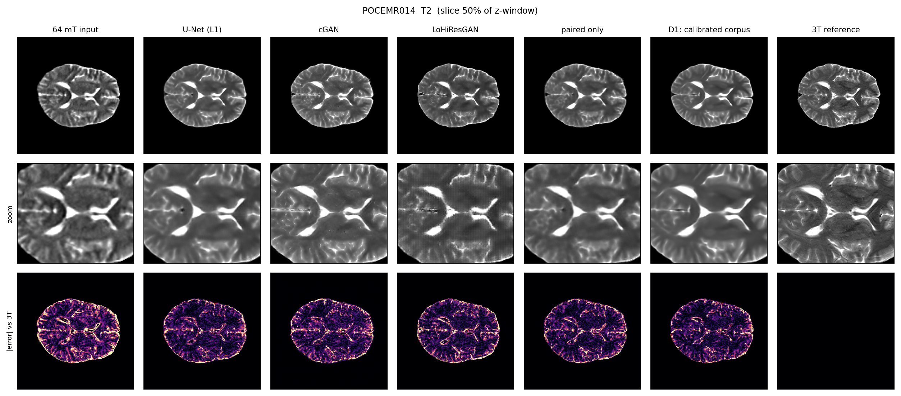

A diagnosis of why the previous approach stalled, three MICCAI-shaped directions built on that diagnosis, and the baseline protocol they are measured against.
The predecessor project ruled out training on the 40 paired subjects and spent its effort on unpaired objectives, believing a measured “cross-subject ceiling” of 0.50–0.67 bounded how well any method could point the correction. That number is an artifact of measuring in an 8×8 pooled embedding. At full resolution the shared cross-subject direction is 0.09 (T2) and 0.22 (T1), and in the high-frequency sub-bands it is zero. The correction is almost entirely subject-specific.
A plain supervised U-Net on 32 paired subjects reaches a directional cosine of 0.74 on the locked test set — roughly eight times the shared component, and far past the supposed ceiling. The same model also makes the high-frequency deficit worse than doing nothing. That is the gap the three directions attack.
Everything below uses a subject-disjoint split. Ten subjects are locked for test and were touched once per method; eight of the forty training subjects are held out for model selection, leaving 32 for fitting.
| Pool | Subjects | T1 slices | T2 slices | Role |
|---|---|---|---|---|
| Paired POCEMR, train | 40 | 2497 | 2478 | 32 fit + 8 model selection |
| Paired POCEMR, test | 10 | 633 | 625 | locked |
| Unpaired 3T (FOMO-50k / IXI) | 185 | 11628 | 11625 | corpus for Direction 1 |
| Unpaired 64 mT | 48 | 5484 | 5589 | independent realism check |
Take the per-slice residual d = W(3T) − W(64 mT) in sym4
sub-bands and compare it between different subjects at matched axial position. If the
correction were a population-level effect, those residuals would align.
| Sub-band | cross-subject, T2 | cross-subject, T1 | within subject, adjacent slice (T2 / T1) |
|---|---|---|---|
| LL | 0.090 | 0.218 | 0.946 / 0.901 |
| LH | 0.003 | 0.001 | 0.890 / 0.583 |
| HL | 0.000 | 0.001 | 0.833 / 0.505 |
| HH | −0.001 | 0.000 | 0.746 / 0.334 |
The 0.50–0.67 figure reproduces only after pooling. On T1 the same cross-subject cosine climbs from 0.218 at full resolution to 0.570 at 16² and 0.737 at 8² — straight through the band the earlier work treated as its target. Pooling averages away the subject-specific detail and leaves a brain-shaped silhouette every subject shares.

Consequence. No unpaired population objective — optimal transport, MMD, a PatchGAN, a cycle — can supply a correction that barely exists at population level. This is a stronger statement than “the shared signal is weak”, and it explains the whole sequence of failures in the predecessor project without appealing to loss design. It says nothing about paired supervision, which gets to use the subject's own measurement.
Every method here that wants more than 40 subjects reaches for an unpaired 3T corpus. Measured against the POCEMR 3T target the corpus is missing 4.55× (T1) and 4.70× (T2) of the power above r = 64 — a gap of 3.8 and 4.9 standard deviations of the target cohort's own between-subject spread.

The volumes are skull-stripped, so about 75% of every slice is exactly zero and agrees trivially. The do-nothing baseline scores 0.857 SSIM and 22.2 dB PSNR whole-image, and 0.503 SSIM and 16.3 dB inside the brain mask. All numbers in this report are brain-masked; whole-image figures are carried alongside only for comparability with published tables.
An exhaustive in-plane shift search improves brain NCC by at most 0.007 (T1) and 0.000 (T2), so the pairs are already aligned; 3T-T1 against 3T-T2 and 64 mT-T2 against 3T-T1 are both optimal at zero shift, so the two contrasts share one grid and cross-contrast fusion needs no extra registration. Global histogram matching fitted on the training 3T pool moves masked SSIM only from 0.503 to 0.517. What is left is within-scale structure.
Each is a separate paper with its own claim, its own baselines and its own failure mode. They share the split, the metrics and the backbone so their numbers compose.
Claim. Pretraining on an unpaired 3T corpus is standard practice and is quietly capped by Finding B. Fix it in two places: learn the 64 mT forward operator from the few real pairs instead of hand-designing it, and calibrate the corpus onto the target's radial spectrum before degrading it.
F: 3T → 64 mT on 32 paired subjects — the
information-destroying direction, so it is well-posed — then colour its residual with
the measured ULF residual spectrum. Rescale the corpus by a radial gain
√(S_target/S_corpus), apply F, pretrain, finetune on the real pairs.
A network pretrained on hand-designed synthetic pairs carries essentially no directional information to real 64 mT: its zero-shot LL cosine is −0.036. Replace the designed operator with one fitted on 32 paired subjects and the same pipeline reaches +0.684 — a zero-shot SSIM of 0.620 that already matches the fully supervised baseline's test SSIM of 0.622, with no real paired enhancement example ever seen. That is the headline: the transferable object is the forward operator, not the enhancer.
It also validates against data that never enters training. Measured on the 48 unpaired 64 mT subjects, the learned operator's output is ~6× closer to the real 64 mT distribution than the designed chain, on both intensity histogram (JSD 0.0019 vs 0.0123) and log-spectrum (0.0198 vs 0.1160). The control row in that table keeps it honest: a genuinely different real ULF cohort sits at 0.0069, so the learned arm scoring below it means the synthetic pool is under-dispersed relative to real between-cohort variation. Domain-randomising F is the obvious remedy and is not implemented yet.
| T2, after finetuning | PSNR | SSIM | ΔSSIM vs best no-corpus | p | HF-pow |
|---|---|---|---|---|---|
| real pairs only, compute-matched | 19.04 | 0.594 | — | — | −0.278 |
| best no-corpus model (baseline U-Net) | 19.42 | 0.622 | — | — | −0.268 |
| + hand-crafted physics D | 19.69 | 0.630 | +0.0080 | 0.004 | −0.329 |
| + learned F, raw corpus | 19.54 | 0.634 | +0.0119 | 0.002 | −0.267 |
| + learned F, calibrated corpus | 19.61 | 0.639 | +0.0171 | 0.002 | −0.240 |
All three corpus arms beat the strongest no-corpus model. Spectral calibration is worth +0.0052 SSIM over the raw corpus on its own (p = 0.002, meaning all ten test subjects improved) and moves the high-frequency power error from −0.267 to −0.240. The effect is small and completely consistent — Finding B holds, but it is worth much less at the finetuned endpoint than learning the operator is at zero shot.
One aside that matters for how this field reports results: the hand-crafted arm wins PSNR (19.69) while having the worst high-frequency power error (−0.329). It biases the model toward blur, and PSNR pays for blur.

| paired subjects | no corpus | + corpus, own operator | honest gain | + corpus, borrowed operator |
|---|---|---|---|---|
| 4 | 0.4667 | 0.5124 | +0.0457 | 0.5623 |
| 8 | 0.5091 | 0.5570 | +0.0479 | 0.5898 |
| 16 | 0.5614 | 0.5969 | +0.0355 | 0.6165 |
| 32 | 0.5937 | 0.6392 | +0.0455 | 0.6392 |
What the gap between the two corpus curves measures is worth more than the claim it replaced. At four paired subjects, borrowing an operator fitted on 32 is worth +0.050 SSIM — as much as the entire corpus effect. There are two separable effects here, and only one of them depends on how much paired data you have:
So the operator is the asset. Fit it centrally on whatever paired data exists, ship it, and a new site needs very little paired data of its own — the same conclusion the zero-shot result reaches from the other direction.
Claim. The two routine contrasts do not degrade equally at 64 mT. T1 relaxation times converge at low field, so ULF T1 loses grey/white separation, while ULF T2 keeps tissue contrast and loses resolution. The two images are differently corrupted views of one anatomy and the useful information should flow mostly one way. Finding D says they already share a grid.
Six dedicated models plus one modality-dropout model, all on the same intersected slice index (2477 train / 625 test), same backbone, same 10k-step budget.

| One dropout-trained model, three input regimes | → 3T T1 | → 3T T2 |
|---|---|---|
| 64 mT input, unchanged | 13.91 / 0.358 | 16.34 / 0.503 |
| 64 mT T1 only | 17.45 / 0.531 | 17.64 / 0.516 |
| 64 mT T2 only | 17.76 / 0.553 | 19.33 / 0.613 |
| both contrasts | 18.16 / 0.577 | 19.45 / 0.619 |
Feeding only the 64 mT T2 scan recovers 3T T1 better than feeding the 64 mT T1 scan itself (17.76 vs 17.45 dB), and lands within 0.12 dB of the both-contrast model on 3T T2. The dedicated models replicate it: 17.69 / 0.558 from T2 against 17.44 / 0.520 from T1 on the 3T T1 target.
Six single-output models: identical head, capacity and budget, so the only thing that varies is which 64 mT contrast the network can see. This separates the input-side gain from the multi-task effect of a two-output head.
| 64 mT input | → 3T T1 | → 3T T2 |
|---|---|---|
| T1 only | 17.44 / 0.520 | 17.39 / 0.503 |
| T2 only | 17.69 / 0.558 | 19.45 / 0.619 |
| both | 18.23 / 0.576 | 19.50 / 0.629 |
| SSIM gained by adding the second contrast | adding T2 | adding T1 |
|---|---|---|
| on the 3T T1 target | +0.056 (p 0.002) | +0.017 (p 0.037) |
| on the 3T T2 target | +0.127 (p 0.002) | +0.010 (p 0.002) |
Adding the 64 mT T2 image is worth three to thirteen times more than adding the 64 mT T1 image, on either target. On the 3T T2 target, adding T1 moves PSNR by +0.05 dB (p = 0.38, not significant) and SSIM by +0.010. At n = 10 the smallest reachable Wilcoxon p is 0.002, which means all ten subjects moved together.
This control softened an earlier reading. Measured through the two-output joint model, adding T1 to T2 looked non-significant on both targets. With the single-output control it is significant, just much smaller than the reverse. The asymmetry is a matter of degree, not an on/off effect: both contrasts contribute and T2 contributes most.
This is what Finding A predicts: the within-subject HH residual cosine is 0.334 for T1 against 0.746 for T2, so the 64 mT T1 residual is largely unstructured noise. Clinically it argues that a portable triage protocol could drop the slower, motion-prone 64 mT T1 acquisition and still synthesise both 3T-like contrasts — a claim that now needs a reader study rather than another metric.
Modality dropout also regularises: the dropout model beats the dedicated joint model on both targets (18.16 vs 17.96 on T1, 19.45 vs 19.32 on T2), so one network covers all three deployment regimes at no cost.
Claim. An enhanced 64 mT image is clinically usable only if the reader knows where to trust it, and the exchangeable unit in a low-field study is a subject, not a voxel. Attaching a finite-sample guarantee exposes a limit nobody in this literature has stated.
1/(n+1). With the eight subjects a 50-subject ULF study can spare, the
floor is 0.111 — a 10% risk level is unreachable however good the model is.
The uncertainty head is not free. The quantile model's median prediction is worse than the plain L1 baseline (18.86 / 0.570 against 19.42 / 0.622), though it is less blurred (r HH 0.583 vs 0.268). A deployment would run the point model and the interval model separately, or accept the cost. A Gaussian variance head is the better of the two uncertainty models: at matched coverage its intervals are 13.6% narrower than constant width against CQR's 9.4%, at equal point accuracy.
And it is a T2 result, not a general one. Repeated on T1, the heteroscedastic advantage nearly vanishes (1.8% narrower for CQR, 4.3% for the Gaussian head) and the width map stops being useful — AUROC falls from 0.828 to 0.602. Same explanation as everywhere else in this study: the 64 mT T1 input is noise-dominated, so its error is more spatially uniform and less predictable from the image. A hallucination map is a credible deliverable on T2 and not yet on T1.
Published numbers are not comparable across cohorts, so every competitor is reimplemented on this split with the same input, budget and metrics. Significance is a Wilcoxon signed-rank test over the ten test subjects against the do-nothing baseline.
| T2, locked 10-subject test | PSNR | SSIM | cos LL | r HH | HF-power err |
|---|---|---|---|---|---|
| 64 mT input (do nothing) | 16.34 ± 0.51 | 0.503 ± 0.030 | — | 0 | −0.176 |
| Global histogram matching | 16.67 ± 0.55 | 0.517 ± 0.033 | 0.336 | — | −0.212 |
| U-Net, L1 · 32 paired subjects | 19.42 ± 1.23 | 0.622 ± 0.042 | 0.741 | 0.268 | −0.268 |
| U-Net, L1 + masked SSIM | 19.73 ± 1.13 | 0.655 ± 0.043 | 0.772 | 0.369 | −0.194 |
| cGAN / pix2pix | 18.75 ± 1.06 | 0.590 ± 0.038 | 0.718 | 0.792 | −0.114 |
| LoHiResGAN, reimplemented | 18.08 ± 0.91 | 0.545 ± 0.034 | 0.697 | 0.841 | −0.132 |
| U-Net, absolute output (no residual anchor) | 19.62 ± 1.14 | 0.628 ± 0.043 | 0.759 | 0.416 | −0.233 |
| U-Net on subject-mismatched pairs | 16.50 ± 1.00 | 0.366 ± 0.031 | 0.489 | 0.078 | −0.146 |
| T1, locked 10-subject test | PSNR | SSIM | cos LL | r HH | HF-power err |
|---|---|---|---|---|---|
| 64 mT input (do nothing) | 13.91 ± 0.47 | 0.358 ± 0.034 | — | 0 | −0.186 |
| U-Net, L1 | 17.49 ± 0.84 | 0.520 ± 0.043 | 0.761 | 0.222 | −0.541 |
| U-Net, absolute output (no residual anchor) | 17.52 ± 0.86 | 0.535 ± 0.044 | 0.757 | 0.681 | −0.330 |
| U-Net, L1 + masked SSIM | 17.14 ± 0.81 | 0.487 ± 0.041 | 0.741 | 0.769 | −0.451 |
| cGAN / pix2pix | 16.96 ± 0.78 | 0.502 ± 0.042 | 0.749 | 0.462 | −0.296 |
| LoHiResGAN, reimplemented | 16.22 ± 0.75 | 0.433 ± 0.039 | 0.708 | 0.980 | −0.076 |
| U-Net on subject-mismatched pairs | 15.12 ± 0.62 | 0.306 ± 0.029 | 0.577 | — | — |
Two things flip between contrasts. The masked-SSIM auxiliary loss helps on T2 (0.622 → 0.655) and hurts on T1 (0.520 → 0.487) while tripling T1 texture (r HH 0.22 → 0.77), so a loss tuned on one contrast should not be shipped for both. And LoHiResGAN on T1 reaches essentially matched sharpness (r HH 0.980, HF-power −0.076) while posting the worst masked SSIM of any trained model — sharpness and fidelity moving in opposite directions, which is how one set of runs can support either story.
The last row of each table is the decisive control for Finding A: it keeps the marginals, the anatomy and the axial position and destroys only the subject correspondence. If the correction were a population effect it should cost almost nothing.

Both GAN architectures lose to plain regression on every distortion metric, and the sub-band decomposition says why. The critic restores almost exactly the right amount of high-frequency energy — r HH climbs from 0.37 to 0.79 and 0.84, and the high-frequency power error nearly closes — while pointing it less accurately than L1 + SSIM does (cos HH 0.17 and 0.21 against 0.32). It is adding plausible 3T texture rather than this subject's texture, which is precisely the quantity Finding A shows is shared across subjects and therefore uninformative about any one of them.
So a claim that a GAN “recovers detail” in ULF enhancement has to be checked against the directional cosine, not against sharpness or a power spectrum. These are reimplementations on this cohort at a matched budget, not the published numbers: the original LoHiResGAN was trained for 350 epochs at batch 1 on a different cohort, and our U-Net predicts a residual on top of the 64 mT input where LoHiResGAN predicts the absolute image.
That second caveat does not survive testing. Retrained to predict the absolute image with no residual anchor, the same U-Net scores 19.62 / 0.628 on T2 — slightly better than with the anchor (+0.006 SSIM, p = 0.010), and still +0.083 SSIM above LoHiResGAN (p = 0.002). On T1 the effect is larger: 0.535 against 0.520 (+0.015, p = 0.004), with high-frequency recovery tripled (r HH 0.22 → 0.68). The residual parameterisation was not the source of the gap — the backbone and the objective are — and dropping it makes the better default. It is the best T1 model in this study.
| Work | Venue | Paired | Approach |
|---|---|---|---|
| LoHiResGAN | Sci Rep 2023 | yes | ResNet-block pix2pix, L1(100) + SSIM |
| LowGAN | Radiology 2025 | yes | three orthogonal-plane pix2pix + 3D U-Net fusion |
| SFNet | MICCAI 2024 | yes | swinUNETRv2 + GAN, latent-diffusion augmentation |
| INR style transfer | MICCAI 2025 | no | implicit representation, unsupervised |
| ULF-EnC entries | MICCAI challenge | yes | segmentation-guided adversarial; Resfusion |
| Restormer-GAN / 3D U-Net | MICCAI 2026 | yes | transformer GAN; multi-sequence 3D U-Net |
| ULF-Synth | 2026 | no | hand-designed physics simulation + spatial-frequency loss |